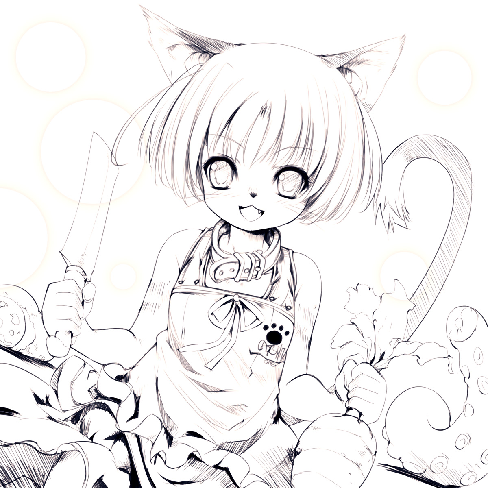

----------------------------------------------------------------------------------------------------
■附赠…和，类似后记那样的东西

初次见面的各位，你们好
再次会见的各位，感谢你们再次光临。
我是人丸。
这是本次作品中作为超豪华嘉宾的千年凛老师的寄稿，请务必欣赏！！
↓↓↓↓↓↓

↑↑↑↑↑↑
Yeah！鼓掌鼓掌鼓掌！！
能在圣诞节收到妖精尤娜如此美妙的绘画。
人丸我真是幸福地无以言表。
千年氏似乎是在圣诞节前夜，拼命涂着蛆虫。
这是能成为一生记忆的圣诞节呢！
圣诞快乐！蛆虫快乐！
千年氏的HP
↑点此跳转网址
然后…
12/28日的早晨。
感觉要死了
按照预定，这作本来是黑猫娘，白无垢的lovelove触手H
不过等注意到的时候…已经往不得了的方向暴走了。
于是画得精尽人亡。
已经不用这么痛苦也可以了哟！
…对吧？
明天起如果不熬夜就来不及了（现实）
嘎噗（吐血
■这次也在「大尺寸JPG」文件夹里放了尺寸稍大的图片■
…那么，让我们在下次作品中再见
您能看上我的拙作，真的非常感谢。
【特别鸣谢】
千年凛様
なるー♀様
あきたけ様

Hitomaru＠works 2012
※点此链接，跳转「SHRINE」的WEB主页
----------------------------------------------------------------------------------------------------
|